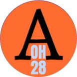

Project Management and Design, Conceptualisation of App to tackle Depression
Led a group of 8 in creation of concepts and business model for app.
Biomechanics researcher, interested in Finite Element Analysis of medical/biological case studies


I have experience researching biomechanical case studies. I have previously used finite element analysis to simulate scoliosis bracing, and performed image analysis of myopic retinas to observe the effects of myopia on retinal shape. I am currently finishing my MPhil at QUT where I investigated whether Magnetic Resonance Elastography can measure intervertebral discs. I am looking to further my finite element knowledge and combine it with image analysis or mechanical analysis of biomechanical systems.
I have expertise in both engineering and health fields:
| Year | Institute | Degree | Research Component |
|---|---|---|---|
| 2019-2023 | Nanyang Technological University | Major in Bioengineering with Second Major in Pharmaceutical Engineering | 2 URECA year-long projects and Final Year Project |
| 2023-2026 | Queensland University of Technology | Master of Philosophy, Thesis by Monograph in Engineering | 2-year long research degree |
Led a group of 8 in creation of concepts and business model for app.
Designed 3D-printed case for device. Proactive in supporting other group members.
Analysed COVID-19 data of USA to assess if political association influenced COVID-19 incidence in each state.
Designed 3D parts in Tinkercad for usage in machine and got compliments. Provided ideas to aid progress in building machine.
Collaborated in a group of 10 to design a poster, obtaining positive feedback. Proactive in contributing ideas for design and content.
Undertaken as part of MPhil in Engineering, and comprised of:
Undertaken as part of an attempt to articulate into PhD in Engineering, and comprised of:
Final Year Project as part of Bachelors in Bioengineering, comprising of:
URECA (Undergraduate Research Experience on Campus) project during Bachelors in Bioengineering, comprising of:
URECA (Undergraduate Research Experience on Campus) project during Bachelors in Bioengineering, comprising of:
As a jack of all trades, I have a wide variety of skills.
You can email me at swathi.jayaraman@hdr.qut.edu.au or fill the contact form below.